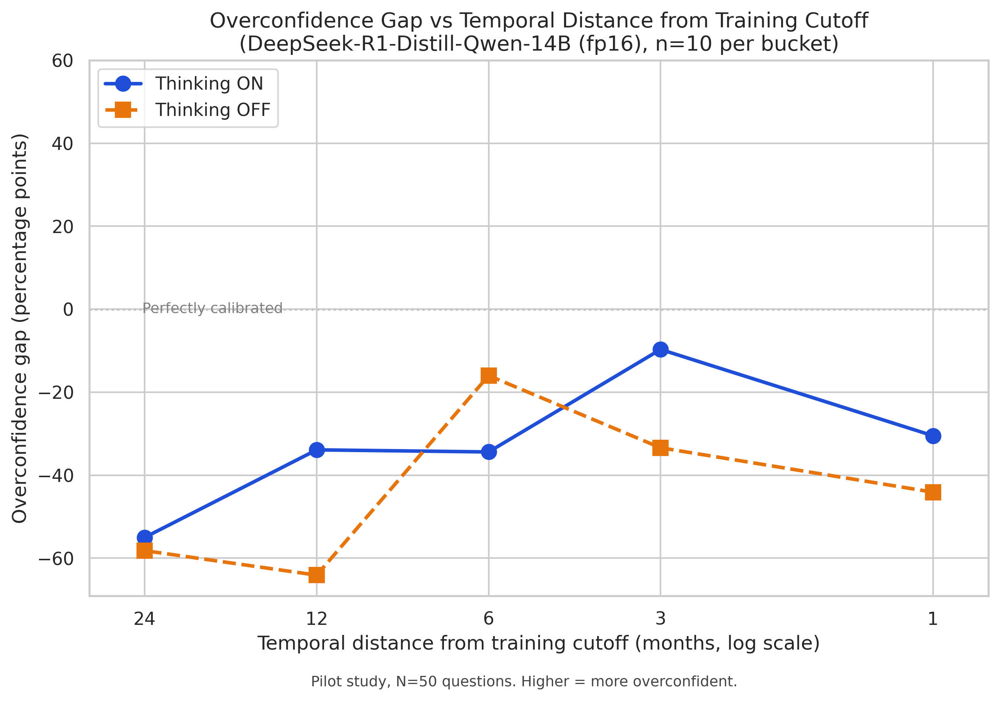

A temporal calibration study using DeepSeek-R1-Distill-Qwen-14B
Model: DeepSeek-R1-Distill-Qwen-14B (fp16) · Platform: Kaggle GPU T4 ×2 (free) · N = 50 questions × 2 modes
Every AI language model is trained on data up to a cutoff date. After that, it knows nothing new.
But data about very recent events (just before the cutoff) is sparse — the internet hasn't had time to write extensively about them yet.
Reasoning (chain-of-thought) could make this worse: the model talks itself into an answer.
Chain-of-thought reasoning before answering. Hypothesis: MORE overconfident near cutoff.
Direct answer, no reasoning. Hypothesis: LESS affected by temporal proximity.
Overconfidence gap = stated confidence − actual accuracy × 100
| Bucket | Distance to Cutoff | Questions |
|---|---|---|
| B1 | 24 months (Jul 2022) | 10 |
| B2 | 12 months (Jul 2023) | 10 |
| B3 | 6 months (Jan 2024) | 10 |
| B4 | 3 months (Apr 2024) | 10 |
| B5 | 1 month (Jun 2024) | 10 |
Categories: sports · politics · science · business · entertainment

pilot_chart__deepseek-ai_DeepSeek-R1-Distill-Qwen-14B.png separately.
X-axis: months from cutoff (cutoff on right) · Y-axis: overconfidence gap · 0 = perfectly calibrated
| Bucket | Months to Cutoff | Mode | Accuracy | Mean Confidence | Overconfidence Gap |
|---|---|---|---|---|---|
| B1 | 24 | Thinking ON | 60% | 5.0 | −55.0 pp |
| B1 | 24 | Thinking OFF | 60% | 1.8 | −58.2 pp |
| B2 | 12 | Thinking ON | 50% | 16.1 | −33.9 pp |
| B2 | 12 | Thinking OFF | 70% | 5.9 | −64.1 pp |
| B3 | 6 | Thinking ON | 50% | 15.6 | −34.4 pp |
| B3 | 6 | Thinking OFF | 30% | 14.0 | −16.0 pp |
| B4 | 3 | Thinking ON | 40% | 30.3 | −9.7 pp ✦ |
| B4 | 3 | Thinking OFF | 40% | 6.6 | −33.4 pp |
| B5 | 1 | Thinking ON | 50% | 19.5 | −30.5 pp |
| B5 | 1 | Thinking OFF | 50% | 5.9 | −44.1 pp |
✦ B4 Thinking ON is closest to calibrated (−9.7 pp) — nearly perfect at 3 months from cutoff.
Overconfidence (gap > 0) rising toward the cutoff, especially for Thinking ON.
Both modes are systematically underconfident (gap always negative). The model says "5% sure" but is right 50% of the time.
However, Thinking ON is less underconfident than OFF, and its gap rises toward the cutoff — the gradient is in the right direction.
Mild signal — Thinking ON shows a temporal calibration gradient. Scale up to confirm.
| Pilot | Full Paper | |
|---|---|---|
| Questions | 50 | 500–1200 |
| Models | 1 | 3–5 families |
| Confidence | Verbalized | Log-probabilities |
| Statistics | None | Bootstrap CIs |
| Baseline | Prefill hack | Clean instruct model |
Expand from 50 to 500–1200 questions. Automate generation with GPT-4o + human verification.
Replace verbalized confidence with token log-probabilities. Already stubbed in code as get_logprob_confidence().
Test across model families (Llama 3, Qwen3, GPT-4o) and sizes. DeepSeek API costs ~$0.05 for 100 calls.
Reasoning mode does shift confidence toward the cutoff — but the absolute direction is underconfidence, not overconfidence. A larger study with log-prob confidence would resolve whether this is a real calibration effect or a verbalization artifact.